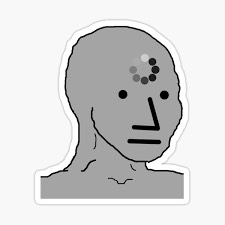

Andres Gil Oliva
10/05/2000

Estudiante de tercer curso en Grado Ingenieria de Tecnologias y Servicios de Telecomunicacion
Bachillerato de Ciencias
E.S.O.
Piloto de F1 profesional 2022-Actualidad
Astrounata en la Estacion Espacial Internacional 2019-2022
Github
andres.giloliva@alumnos.upm.es
Juego a la petanca
Colecciono encinas